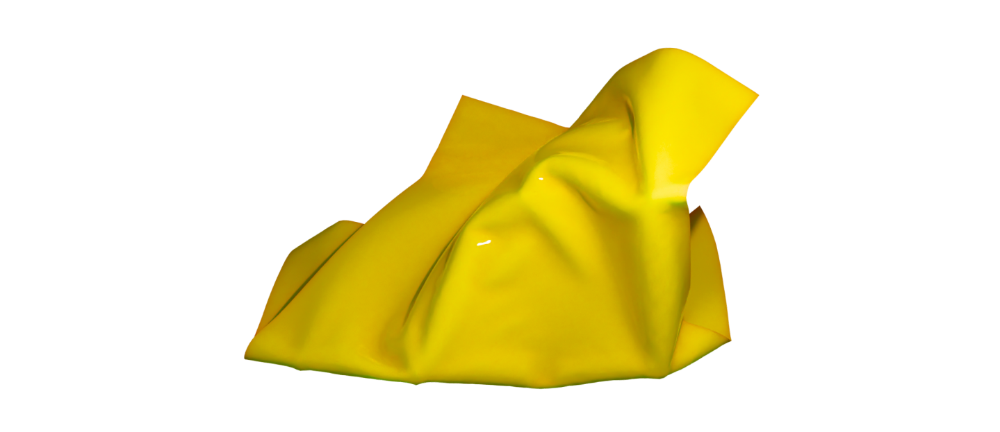

Статьи
Замена обычным пакетам
Пластик, включая пластиковые пакеты, представляет серьезную проблему для окружающей среды. Они образуют большое количество отходов, которые долго разлагаются и могут наносить вред животным и экосистемам. Осознанное потребление включает выбор альтернативных упаковочных материалов, таких как многоразовые тканевые сумки или биоразлагаемые пакеты, а также максимально сокращение использования пластика в повседневной жизни. Сознательные шаги по сокращению пластикового использования помогают создать более устойчивую и экологически чистую планету.
Каждую минуту в мире используется около миллиона пластиковых пакетов.
 Пластиковые пакеты
Пластиковые пакетыПластиковые пакеты — это удобный и распространенный вид упаковки, однако, они имеют ряд негативных свойств, которые могут нанести вред окружающей среде.
 Негативные свойстваВо-первых, пластиковые пакеты не разлагаются в природе в течение сотен лет, загрязняя окружающую среду и нанося вред животным и растениям. Во-вторых, производство пластиковых пакетов требует большое количество нефти и других ресурсов, что увеличивает негативное воздействие на окружающую среду.
На что заменить?Существует несколько альтернатив, которые можно использовать вместо губки
Тканевые сумки.
Бумажные пакеты.
Пакеты из крафт-бумаги.
Сумки из етки.